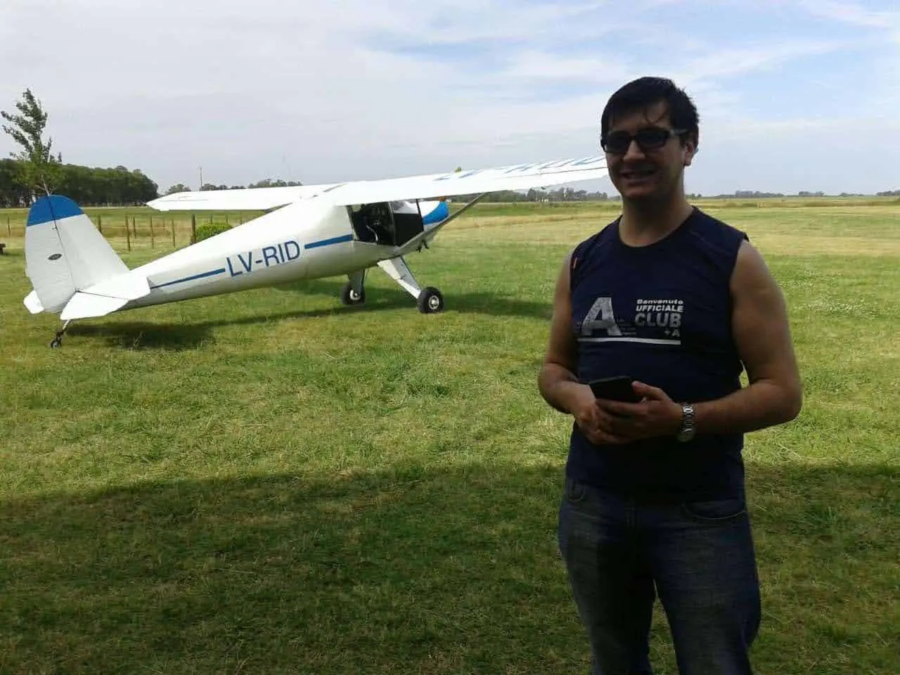

01 / 07RAMOS MEJÍA
Cuando todavía estaba todo en su lugar.
Antes de las bolsas hubo años de trabajo, rutina y una vida que reconocía como propia.

Leer este capítulo
En Ramos Mejía tuve una etapa en la que sentía que mi vida estaba armada. Había cosas materiales, recuerdos y planes que parecían tener un lugar estable.
No digo que todo fuera perfecto. Digo que existía una estructura cotidiana. Y que para entender lo que vino después, primero hay que saber que hubo un antes.

